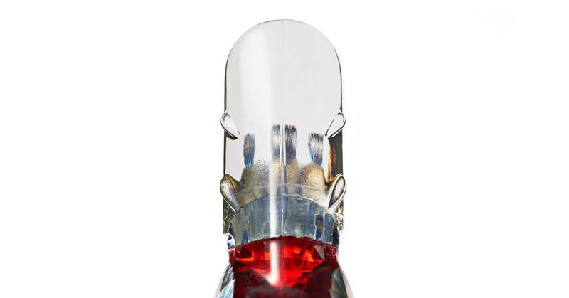
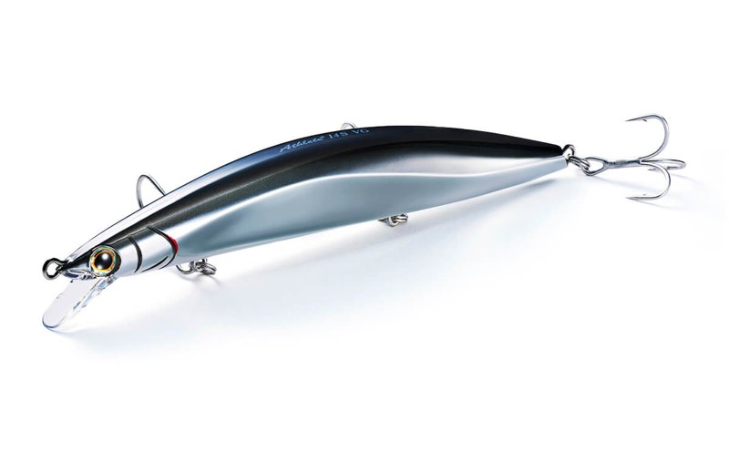
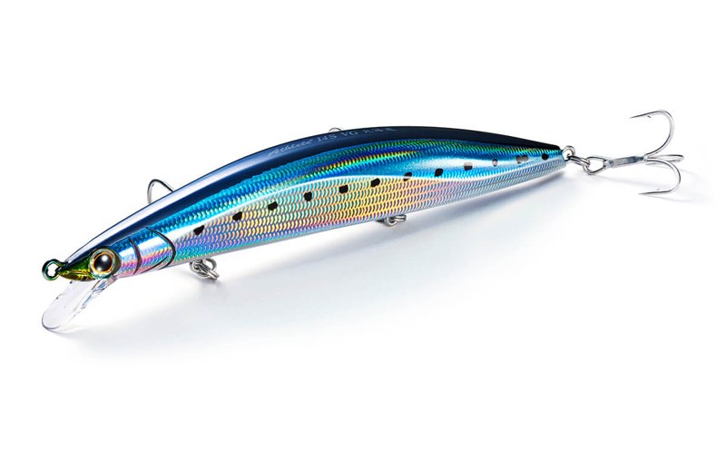
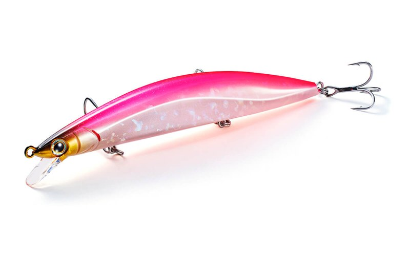
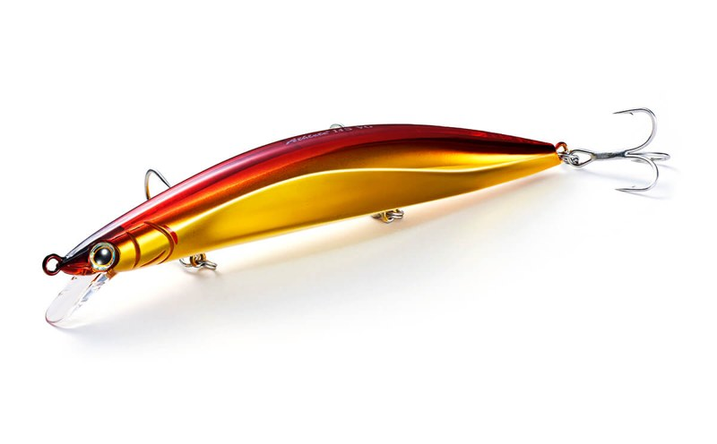
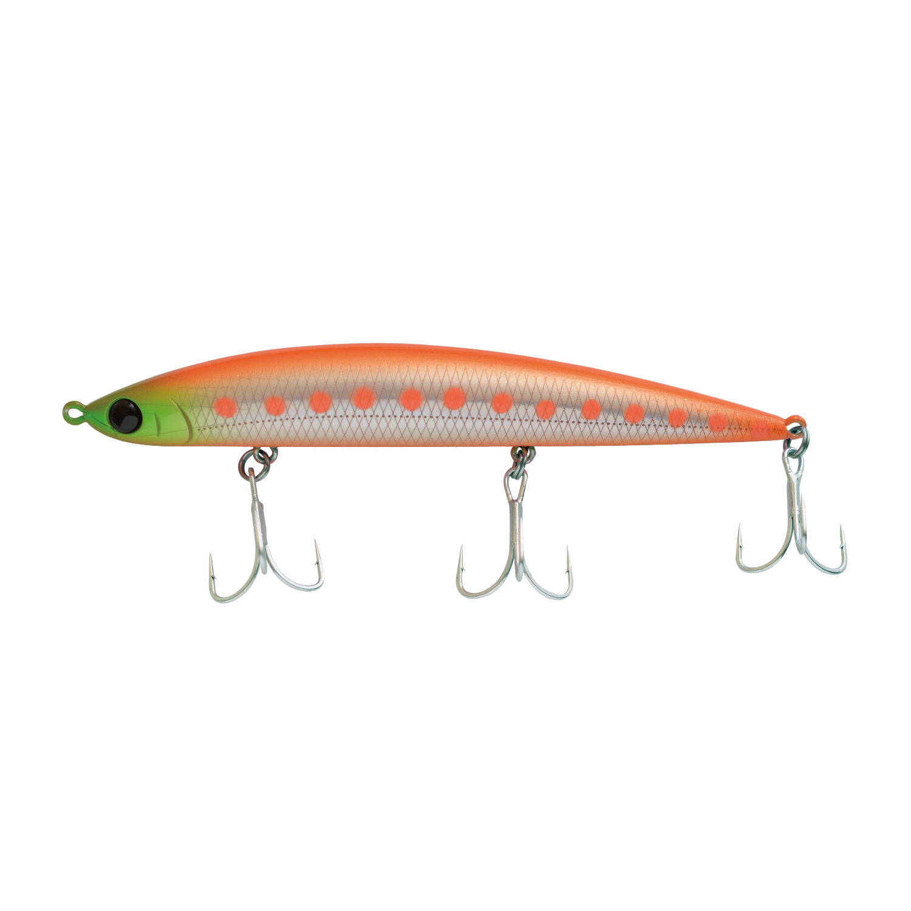

アスリート+ 14SVG
（Athlete+ 14SVG）
アスリート+ 14SVGは、ジャクソンの定番ミノー「アスリート」に、ジャクソンの釣る技術を足した「アスリート+（プラス）」シリーズの140mmシンキングモデルです。
リップのボルテックスジェネレーター（VG）で飛距離が安定し、フラットサイドボディのウォブンロールで強いフラッシングを出すのが最大の特徴。30gのシンキングなので、サーフの沖や流れの強い場所でも、フローティングより深いレンジを引けます。

画像出典:Jackson公式HP
スペック
- メーカー
- Jackson（ジャクソン）
- シリーズ
- アスリート+（12 FS VG／14 FS VG）
- タイプ
- シンキングミノー
- 全長
- 140mm
- 重さ
- 30g
- フック
- #4
- ターゲット
- ヒラメ・シーバスなど
- 価格
- 2,530円（税込）
▼今すぐチェック

アスリート+ 14SVGの特徴
VG搭載で、さらに進化したアスリート
-
ボルテックスジェネレーター（VG）で飛距離が安定
リップに付いたVG（特許登録済み）が、投げた時の姿勢を安定させる。向かい風でも失速しにくく、安定した飛距離を出せる。
-
フラットサイドボディの強いフラッシング
ボディの側面を平らにして、ウォブンロール（ウォブリング＋ローリング）の時に強いフラッシングを出す。
-
体高をもたせてアピール力アップ
それまでのスリムなボディから体高をもたせて、アピール力を高めた。サーフの広い場所でも魚に気づかせやすい。
アスリート+ 14SVGの使い方
基本はただ巻きです。着水したらカウントで沈めて、狙いたい深さに合わせてから一定のスピードで巻くと、フラッシングを生かしながら同じレンジを長く引けます。
サーフでは、沖のブレイクの手前で少し沈めてから巻いたり、ときどき巻くのを止めてフォールを入れたりすると、ヒラメに食わせのきっかけを作れます。

画像出典:Jackson公式HP
アスリート+ 14SVGの得意な状況
サーフで沖のブレイクまで飛ばしたい時や、波や流れが強くてフローティングでは浮き上がってしまう時に出番です。
フローティングの14FVGより一段深いレンジを、VGの飛距離で遠くまで探れるのが強み。ヒラメやシーバスのほか、サーフの魚を広く狙えます。
ワンポイント
14FVGと14SVGを両方持っておき、まずSVGで深めを探って反応がなければFVGで浅いレンジに切り替えると、同じアクションのままレンジだけ変えて魚の居場所を探せます。
アスリート+ 12 FS VG／14 FS VGの使い分け
| モデル | 全長／ |
タイプ | こんな |
|---|---|---|---|
| 12FVG | 120mm／ |
フローティング | ベイトが |
| 12SVG | 120mm／ |
シンキング | 小さめの |
| 14FVG | 140mm／ |
フローティング | サーフ・ |
| 14SVG | 140mm／ |
シンキング | サーフの |
もっと大きい魚を狙うなら、160mm・39gのアスリート16FVG（モンスターエディション）もあります。
スペックはジャクソン公式HPの記載より。
人気カラー
アスリート+ 14SVGの人気カラーを紹介します。

CKI カタクチカタクチイワシを再現したナチュラルカラー。澄み潮の1本目に。

NIWⅡ ナチュラルイワシⅡイワシがベイトの時の定番。日中のサーフに。

PPG パールピンクグローピンクとグローで、朝夕や濁りの時に目立たせたい時に。

CRG レッドバックゴールドゴールドのフラッシングで、濁り潮や曇りの日に。
画像出典:Jackson公式HP
▼今すぐチェック
アスリート+ 14SVGに似ているルアー
-
 アスリート16FVG
ジャクソン
詳細はこちら＞
アスリート16FVG
ジャクソン
詳細はこちら＞
同じアスリート+の160mm大物専用モデル。もっと大きい魚を狙うなら。
-

アスリート12SSP ジャクソン 詳細はこちら＞同じアスリートのシンキングペンシル。遠浅サーフでさらに遠くを探るなら。
-
 リンバーiF127S
DUO
詳細はこちら＞
リンバーiF127S
DUO
詳細はこちら＞
サーフのヒラメ向けシンキングミノー。ほかのメーカーと比べたい時に。